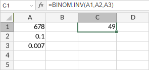

BINOM.INV funkcija
Funkcija BINOM.INV je jedna od statističkih funkcija. Koristi se za vraćanje najmanje vrednosti za koju je kumulativna binomna raspodela veća ili jednaka zadatoj kriterijumskoj vrednosti.
Sintaksa
BINOM.INV(trials, probability_s, alpha)
Funkcija BINOM.INV ima sledeće argumente:
| Argument | Opis |
|---|---|
| trials | Broj pokušaja, numerička vrednost veća od 0. |
| probability_s | Verovatnoća uspeha u svakom pokušaju, numerička vrednost veća od 0, ali manja od 1. |
| alpha | Kriterijum, numerička vrednost veća od 0, ali manja od 1. |
Napomene
Kako primeniti funkciju BINOM.INV.
Primeri
Slika ispod prikazuje rezultat koji vraća funkcija BINOM.INV.
